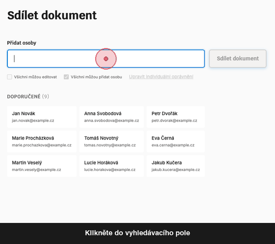

Predtim
Zadani
Emailovy klient potreboval sdileni souboru s "radnou" spravou pristupu. Specifikace vyzadovala technickou spravu opravneni.

Co bylo spatne
- Technicky zargon (A, R, W, M, D opravneni)
- Slozite checkboxy a matice
- Zamereni na "spravu prav"
- Vyzadovalo pochopeni access control
- Neodpovidalo myslenikovemu modelu uzivatele
- Jednoduchy ukol pusobil komplikovane
Uzivatele nechtěji "spravovat opravneni". Chteji sdilet s Annou.
Potom
Reseni
Roky iteraci vedly k tomuto: Napiste jmeno, kliknete, sdilejte. Zadne matice opravneni. Zadny technicky zargon.

Co se zmenilo
- Vyhledavani najde lidi okamzite
- Karty zobrazuji doporucene kontakty
- Pills jasne zobrazuji vyber
- Lidsky jazyk ("Kdo muze upravovat?")
- Chytre vychozi hodnoty (nejcastejsi pripad)
- Progresivni odhalovani (pokrocile skryte)
Vysledek: Lide se dostanou k cili bez premysleni o "opravnenich".